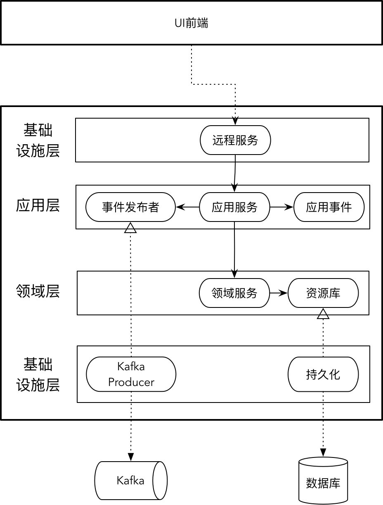

- 001 「战略篇」访谈 DDD 和微服务是什么关系？.md.html
- 002 「战略篇」开篇词：领域驱动设计，重焕青春的设计经典.md.html
- 003 领域驱动设计概览.md.html
- 004 深入分析软件的复杂度.md.html
- 005 控制软件复杂度的原则.md.html
- 006 领域驱动设计对软件复杂度的应对（上）.md.html
- 007 领域驱动设计对软件复杂度的应对（下）.md.html
- 008 软件开发团队的沟通与协作.md.html
- 009 运用领域场景分析提炼领域知识（上）.md.html
- 010 运用领域场景分析提炼领域知识（下）.md.html
- 011 建立统一语言.md.html
- 012 理解限界上下文.md.html
- 013 限界上下文的控制力（上）.md.html
- 014 限界上下文的控制力（下）.md.html
- 015 识别限界上下文（上）.md.html
- 016 识别限界上下文（下）.md.html
- 017 理解上下文映射.md.html
- 018 上下文映射的团队协作模式.md.html
- 019 上下文映射的通信集成模式.md.html
- 020 辨别限界上下文的协作关系（上）.md.html
- 021 辨别限界上下文的协作关系（下）.md.html
- 022 认识分层架构.md.html
- 023 分层架构的演化.md.html
- 024 领域驱动架构的演进.md.html
- 025 案例 层次的职责与协作关系（图文篇）.md.html
- 026 限界上下文与架构.md.html
- 027 限界上下文对架构的影响.md.html
- 028 领域驱动设计的代码模型.md.html
- 029 代码模型的架构决策.md.html
- 030 实践 先启阶段的需求分析.md.html
- 031 实践 先启阶段的领域场景分析（上）.md.html
- 032 实践 先启阶段的领域场景分析（下）.md.html
- 033 实践 识别限界上下文.md.html
- 034 实践 确定限界上下文的协作关系.md.html
- 035 实践 EAS 的整体架构.md.html
- 036 「战术篇」访谈：DDD 能帮开发团队提高设计水平吗？.md.html
- 037 「战术篇」开篇词：领域驱动设计的不确定性.md.html
- 038 什么是模型.md.html
- 039 数据分析模型.md.html
- 040 数据设计模型.md.html
- 041 数据模型与对象模型.md.html
- 042 数据实现模型.md.html
- 043 案例 培训管理系统.md.html
- 044 服务资源模型.md.html
- 045 服务行为模型.md.html
- 046 服务设计模型.md.html
- 047 领域模型驱动设计.md.html
- 048 领域实现模型.md.html
- 049 理解领域模型.md.html
- 050 领域模型与结构范式.md.html
- 051 领域模型与对象范式（上）.md.html
- 052 领域模型与对象范式（中）.md.html
- 053 领域模型与对象范式（下）.md.html
- 054 领域模型与函数范式.md.html
- 055 领域驱动分层架构与对象模型.md.html
- 056 统一语言与领域分析模型.md.html
- 057 精炼领域分析模型.md.html
- 058 彩色 UML 与彩色建模.md.html
- 059 四色建模法.md.html
- 060 案例 订单核心流程的四色建模.md.html
- 061 事件风暴与业务全景探索.md.html
- 062 事件风暴与领域分析建模.md.html
- 063 案例 订单核心流程的事件风暴.md.html
- 064 表达领域设计模型.md.html
- 065 实体.md.html
- 066 值对象.md.html
- 067 对象图与聚合.md.html
- 068 聚合设计原则.md.html
- 069 聚合之间的关系.md.html
- 070 聚合的设计过程.md.html
- 071 案例 培训领域模型的聚合设计.md.html
- 072 领域模型对象的生命周期-工厂.md.html
- 073 领域模型对象的生命周期-资源库.md.html
- 074 领域服务.md.html
- 075 案例 领域设计模型的价值.md.html
- 076 应用服务.md.html
- 077 场景的设计驱动力.md.html
- 078 案例 薪资管理系统的场景驱动设计.md.html
- 079 场景驱动设计与 DCI 模式.md.html
- 080 领域事件.md.html
- 081 发布者—订阅者模式.md.html
- 082 事件溯源模式.md.html
- 083 测试优先的领域实现建模.md.html
- 084 深入理解简单设计.md.html
- 085 案例 薪资管理系统的测试驱动开发（上）.md.html
- 086 案例 薪资管理系统的测试驱动开发（下）.md.html
- 087 对象关系映射（上）.md.html
- 088 对象关系映射（下）.md.html
- 089 领域模型与数据模型.md.html
- 090 领域驱动设计对持久化的影响.md.html
- 091 领域驱动设计体系.md.html
- 092 子领域与限界上下文.md.html
- 093 限界上下文的边界与协作.md.html
- 094 限界上下文之间的分布式通信.md.html
- 095 命令查询职责分离.md.html
- 096 分布式柔性事务.md.html
- 097 设计概念的统一语言.md.html
- 098 模型对象.md.html
- 099 领域驱动设计参考过程模型.md.html
- 100 领域驱动设计的精髓.md.html
- 101 实践 员工上下文的领域建模.md.html
- 102 实践 考勤上下文的领域建模.md.html
- 103 实践 项目上下文的领域建模.md.html
- 104 实践 培训上下文的业务需求.md.html
- 105 实践 培训上下文的领域分析建模.md.html
- 106 实践 培训上下文的领域设计建模.md.html
- 107 实践 培训上下文的领域实现建模.md.html
- 108 实践 EAS 系统的代码模型.md.html
- 109 后记：如何学习领域驱动设计.md.html
- 捐赠
094 限界上下文之间的分布式通信
当一个软件系统发展为微服务架构风格的分布式系统时，限界上下文之间的协作就可能会从进程内通信变为跨进程通信。利用防腐层，固然可以减少因为通信方式的变化对协作机制带来的影响；然而，若是全然无视这种变化，又未免有些掩耳盗铃了。无论采用何种编程模式与框架来封装分布式通信，都只能做到让跨进程的通信方式变得更加透明，却不可抹去分布式通信固有的不可靠性、传输延迟性等诸多问题，选择的 I/O 模型也会影响到计算机资源特别是 CPU、进程和线程资源的使用，从而影响服务端的响应能力。分布式通信传输的数据也有别于进程内通信，选择不同的序列化框架、不同的通信机制，对远程服务接口的定义也提出了不同的要求。
分布式通信的设计因素
一旦决定采用分布式通信，通常需要考虑如下三个因素：
- 通信协议：用于数据或对象的传输
- 数据协议：为满足不同节点之间的统一通信，需确定统一的数据协议
- 接口定义：接口要满足一致性与稳定性，它的定义受到通信框架的影响
通信协议
为了保障分布式通信的可靠性，在传输层需要采用 TCP 协议，它能够可靠地把数据在不同的地址空间上搬运。在传输层之上的应用层，往往选择 HTTP 协议，如 REST 架构风格的框架，又或者采用二进制协议的 HTTP/2，如 Google 的 RPC 框架 gRPC。
可靠传输还要建立在网络传输的低延迟基础上，如果服务端如果无法在更短时间内处理完请求，又或者处理并发请求的能力较弱，就会导致服务器资源被阻塞，影响数据的传输。数据传输的能力取决于操作系统的 I/O 模型，因为分布式节点之间的数据传输本质就是两个操作系统之间通过 Socket 实现的数据输入与输出。传统的 I/O 模式属于阻塞 I/O，它与线程池的线程模型相结合。由于一个系统内部可使用的线程数量是有限的，一旦线程池没有可用线程资源，当工作线程都阻塞在 I/O 上时，服务器响应客户端通信请求的能力就会下降，导致通信的阻塞。因此，分布式通信一般会采用 I/O 多路复用或异步 I/O，如 Netty 就采用了 I/O 多路复用的模型。
数据协议
客户端与服务端的通信受到跨进程的限制，必须要将通信的数据进行序列化和反序列化，实现对象与数据的转换。这就要求跨越进程传递的消息契约对象必须能够支持序列化。选择序列化框架需要关注：
- 编码格式：采用二进制还是字符串等可读的编码
- 契约声明：基于 IDL 如 Protocol Buffers/Thrift，还是自描述如 JSON、XML
- 语言平台的中立性：如 Java 的 Native Serialization 只能用于 JVM 平台，Protocol Buffers 可以跨各种语言和平台
- 契约的兼容性：契约增加一个字段，旧版本的契约是否还可以反序列化成功
- 与压缩算法的契合度：为了提高性能或支持大量数据的跨进程传输，需要结合各种压缩算法，例如 GZIP、Snappy
- 性能：序列化和反序列化的时间，序列化后数据的字节大小，都会影响到序列化的性能
常见的序列化协议包括 Protocol Buffers、Avro、Thrift、XML、JSON、Kyro、Hessian 等。序列化协议需要与不同的通信框架结合，例如 REST 框架选择的序列化协议通常为文本型的 XML 或 JSON，使用 HTTP/2 协议的 gRPC 自然会与 Protocol Buffers 结合。至于 Dubbo，可以选择多种组合形式，例如 HTTP 协议 + JSON 序列化、Netty + Dubbo 序列化、Netty + Hession2 序列化等。如果选择异步 RPC 的消息传递方式，只需发布者与订阅者遵循相同的序列化协议即可。如果业务存在特殊性，甚至可以定义自己的事件消息协议规范。
接口定义
采用不同的分布式通信机制，对接口定义的要求也不相同，例如基于 XML 的 Web Service 与 REST 服务就采用了不同的接口定义。RPC 框架对接口的约束要少一些，因为 RPC 从本质上讲是一种远程过程调用（Remote Process Call）协议，目的是为了封装底层的通讯细节，使得开发人员能够以近乎本地通信的编程模式来实现分布式通信。广泛意义上讲，REST 其实也是一种 RPC。至于消息传递机制要求的接口，由于它通过引入消息队列（或消息代理）解除发布者与订阅者之间的耦合，因此它们之间的接口其实是通过事件来定义的。
虽然不同的分布式通信机制对接口定义的要求不同，但设计原则却是相同的，即在保证服务的质量属性基础上，尽量解除客户端与服务端之间的耦合，同时保证接口版本升级的兼容性。
分布式通信机制
虽然有多种不同的分布式通信机制，但在微服务架构风格下，采用的分布式通信主要包括：REST、RPC 和消息传递。我选择了 Java 社区最常用的 Spring Boot + Spring Cloud、Dubbo 与 Kafka 作为这三种通信机制的代表，分别讨论它们对领域驱动设计带来的影响。
REST
REST 服务通常采用了 HTTP 协议 + JSON 序列化实现数据的跨进程传输。REST 风格的服务接口往往是无状态的，并要求通过统一的接口来对资源执行各种操作。正因为此，远程服务的接口定义实则可以分为两个层面。其一是远程服务类的方法定义，除了方法的参数与返回值必须支持序列化外，REST 框架对方法的定义几乎没有任何限制。其二是 REST 服务的接口定义，在 Spring Boot 中就是通过 @RequestMapping 标注指定的 URI 以及 HTTP 动词。
客户端在调用 REST 服务时，需要指定 URI、HTTP 动词以及请求/响应消息。其中，请求直接传递的参数映射为 @RequestParam，通过 URI 模板传递的参数则映射为 @PathVariable。如果要遵循REST服务定义规范，一般建议参数通过 URI 模板传递，例如订单的 id 参数：
GET /orders/{orderId}
对应的 REST 服务定义为：
package com.ecommerce.ordercontext.resources;
@RestController
@RequestMapping(value="/orders")
public class OrderResource {
@RequestMapping(value="/{orderId}", method=RequestMethod.GET)
public OrderResponse orderOf(@PathVariable String orderId) { }
}
采用这种方式定义，则服务接口的参数往往定义为语言的内建类型或内建类型的集合。若要传递自定义的请求对象，就需要使用 @RequestBody 标注，HTTP 动词则需要使用 POST、PUT 或 DELETE。
如果将消息契约对象定义在应用层，REST 服务对应用服务的影响就是要求请求与响应对象支持序列化，这取决于服务设置的 Content-Type 类型究竟为哪一种序列化协议。多数 REST 服务会选择简单的 JSON 协议。
下游限界上下文若要调用上游的 REST 服务，需要通过 REST 客户端发起跨进程调用。如果事先为下游限界上下文建立了防腐层，就能将这一变化对下游限界上下文产生的影响降到最低。例如，针对上一章给出的订单上下文案例，可以在保证防腐层接口 IventoryClient 不变的情况下，修改位于基础设施层的 InventoryServiceClient 实现：
public class InventoryServiceClient implements InventoryClient {
// 不再依赖库存上下文的应用服务，而是使用 REST 客户端
private RestTemplate restTemplate;
public boolean isAvailable(Order order) {
// 自定义请求消息对象
CheckingInventoryRequest request = new CheckingInventoryRequest();
for (OrderItem orderItem : order.items()) {
request.add(orderItem.productId(), orderItem.quantity());
}
// 自定义响应消息对象
InventoryResponse response = restTemplate.postForObject("http://inventory-service/inventories/order", request, InventoryResponse.class);
return response.hasError() ? false : true;
}
}
当然，订单上下文的客户端调用的不再是库存上下文的应用服务，而是对应的远程 REST 服务，其定义为：
package com.ecommerce.inventorycontext.resources;
@RestController
@RequestMapping(value="/inventories")
public class InventoryResource {
@RequestMapping(value="/order", method=RequestMethod.POST)
public InventoryResponse checkInventory(@RequestBody CheckingInventoryRequest inventoryRequest) {}
}
由于是跨进程通信，订单上下文的客户端实现不能重用库存上下文的消息契约对象，需要自定义对应的请求对象与响应对象，然后由 RestTemplate 发起 POST 请求。
调用远程 REST 服务的客户端实现也可以使用 Spring Cloud Feign 对其进行简化。在订单限界上下文，只需要给客户端接口标记 @FeignClient 等标注即可，如：
package com.ecommerce.ordercontext.interfaces.client;
@FeignClient("inventory-service")
public interface InventoryClient {
@RequestMapping(value = "/inventories/order", method = RequestMethod.POST)
InventoryResponse available(@RequestBody CheckingInventoryRequest inventoryRequest);
}
@FeignClient 等标注为防腐层的客户端接口引入了对 Feign 框架的依赖，因此从追求整洁架构的角度来看，显得美中不足。不仅如此，Feign 接口除了不强制规定方法名称必须保持一致外，接口方法的输入参数与返回值必须与上游远程服务的接口方法保持一致。一旦上游远程服务的接口定义发生了变更，就会影响到下游客户端。这实际上削弱了防腐层的价值。
RPC
RPC 从其本质而言，其实是一种技术思想，即为远程调用提供一种类本地化的编程模式，封装了网络通信和寻址，达到一种位置上的透明性。因此，RPC 并不限于传输层的网络协议，但为了数据传输的可靠性，通常采用的还是 TCP 协议。
RPC 经历了漫长的历史发展与演变，从最初的远程过程调用，到 CORBA（Common Object Request Broker Architecture）提出的分布式对象（Distributed Object）技术，微软基于 COM 推出的 DCOM，到后来的 .NET Remoting 以及分布式通信的集大成框架 WCF（Windows Communcation Foundation），Java 从远程方法调用（RMI）到企业级的分布式架构 EJB，随着网络通信技术的逐渐成熟，RPC 从简单到复杂，然后又由复杂回归本质，关注分布式通信与高效简约的序列化机制，这一设计思想的代表就是 Google 推出的 gRPC+Protocal Buffer。
随着微服务架构变得越来越流行，RPC 的重要价值又再度得到体现。许多开发者发现 REST 服务在分布式通信方面无法满足高并发低延迟的需求，HTPP/1.0 的连接协议存在许多限制，以 JSON 为主的序列化既低效又冗长，这就为 RPC 带来了新的机会。阿里的 Dubbo 就是将 RPC 框架与微服务技术融合起来，既满足面向接口的远程方法调用，实现分布式通信的智能容错与负载均衡，又实现了服务的自动注册和发现，这使得它成为了限界上下文跨进程通信的一种主要选择。
Dubbo 架构将远程服务定义为 Provider，即服务的提供者，调用远程服务的客户端则定义为 Consumer，即服务的消费者。由于 Dubbo 采用的分布式通信本质上是一种远程方法调用，即通过远程对象代理“伪装”成本地调用的形式，因而需要服务提供者满足“接口与实现”分离的设计原则。分离出去的服务接口被部署在客户端，作为客户端调用远程代理的“外壳”，真正的服务实现则部署在服务端，并通过 ZooKeeper 或 Consul 等框架实现服务的注册。
Dubbo 对服务的注册与发现依赖于 Spring 配置文件，框架对服务提供者接口的定义是无侵入式的，但接口的实现类则必须添加 Dubbo 定义的 @Service 标注。例如，检查库存服务提供者的接口定义就与普通的 Java 接口没有任何区别：
package com.ecommerce.inventorycontext.application.providers;
public interface InventoryProvider {
InventoryResponse checkInventory(CheckingInventoryRequest inventoryRequest)
}
该接口的实现应与接口定义分开放在不同的模块，定义为：
package com.ecommerce.inventorycontext.gateway.providers;
@Service
public class InventoryProviderImpl implements InventoryProvider {
public InventoryResponse checkInventory(CheckingInventoryRequest inventoryRequest) {}
}
接口与实现分离的结构遵循了 Dubbo 官方推荐的模块与分包原则：“基于复用度分包，总是一起使用的放在同一包下，将接口和基类分成独立模块，大的实现也使用独立模块。”这里所谓的复用度，按照领域驱动设计的原则，其实就是按照限界上下文进行分包，甚至可以说是领域驱动设计的限界上下文为 Dubbo 服务的划分提供了设计依据。
在 Dubbo 官方给出的《服务化最佳实践》中，给出了如下建议：
- 建议将服务接口、服务模型、服务异常等均放在 API 包中，因为服务模型和异常也是 API 的一部分。
- 服务接口尽可能大粒度，每个服务方法应代表一个功能，而不是某功能的一个步骤，否则将面临分布式事务问题。
- 服务接口建议以业务场景为单位划分，并对相近业务做抽象，防止接口数量爆炸。
- 不建议使用过于抽象的通用接口，如
Map query(Map)，这样的接口没有明确语义，会给后期维护带来不便。 - 每个接口都应定义版本号，为后续不兼容升级提供可能，如：
<dubbo:service interface="com.xxx.XxxService" version="1.0" />。 - 服务接口增加方法，或服务模型增加字段，可向后兼容，删除方法或删除字段，将不兼容，枚举类型新增字段也不兼容，需通过变更版本号升级。
- 如果是业务种类，以后明显会有类型增加，不建议用 Enum，可以用 String 代替。
- 服务参数及返回值建议使用POJO对象，即通过setter, getter方法表示属性的对象。
- 服务参数及返回值不建议使用接口。
- 服务参数及返回值都必须是传值调用，而不能是传引用调用，消费方和提供方的参数或返回值引用并不是同一个，只是值相同，Dubbo不支持引用远程对象。
分析 Dubbo 服务的最佳实践，了解 Dubbo 框架自身对服务定义的限制，再对比领域驱动设计的分层架构，就可以确定在领域驱动设计中使用 Dubbo 作为分布式通信机制时远程服务与应用服务的设计实践。
首先，应用服务的方法本身就是为了满足完整业务价值引入的外观接口，服务粒度与 Dubbo 服务的要求是保持一致的。应用服务的参数定义为消息契约对象，它作为 DTO 模式的体现，通常会定义为不依赖于任何框架的 POJO 值对象，这也是符合 Dubbo 服务要求的。Dubbo 服务的版本号定义在配置文件中，版本自身并不会影响服务定义。结合接口与实现分离原则与整洁架构思想，可以认为应用层的应用服务即 Dubbo 服务提供者的接口，消息契约对象也定义在应用层中，而远程服务则为 Dubbo 服务提供者的实现，它依赖了 Dubbo 框架：
至于对 Dubbo 服务的调用，除了必要的配置与部署需求之外，与进程内通信的上下文协作没有任何区别，因为 Dubbo 服务接口与消息契约对象就部署在客户端，可以直接调用服务接口的方法。若有必要，仍然建议在防腐层的客户端实现中调用 Dubbo 服务。与 REST 服务不同，一旦服务接口发生了变化，不仅需要修改客户端代码，还需要重新编译服务接口包，然后在客户端上下文进行重新部署。若希望客户端不依赖服务接口，可以使用 Dubbo 提供的泛化服务 GenericService。泛化服务接口的参数与返回值只能是 Map，若要表达一个自定义契约对象，需要以 Map
Dubbo 服务的实现皆位于上游限界上下文所在的服务端。如果调用者希望在客户端也执行部分逻辑，如 ThreadLocal 缓存，验证参数等，就需要在客户端本地提供存根（Stub）实现，并在服务配置中指定 Stub 的值。这在一定程度上会影响客户端防腐层代码的编写。
消息传递
REST 服务在跨平台通信与接口一致性方面存在天然的优势，REST 架构风格业已成熟，可以说是微服务通信的首选。然而现阶段的 REST 服务主要采用了 HTTP/1.0 协议与 JSON 序列化，在数据传输性能方面表现欠佳。RPC 服务解决了这一问题，但在跨平台与服务解耦方面又有着一定的技术约束。通过消息队列进行消息传递的方式，作为一种典型的非阻塞跨平台异步通信机制，会成为 REST 与 RPC 服务之外的有益补充。
消息传递通常采用发布/订阅事件模式来完成限界上下文之间的协作。在 3-18 课《发布者—订阅者模式》中，我谈到了在限界上下文之间通过应用事件（Application Event）来实现彼此的协作。考虑到事件的解耦性，这一协作方式能够最大程度地保证限界上下文的自治性。
如果使用了事件流在当前限界上下文缓存和同步了本该由上游限界上下文提供的数据，还可以将跨限界上下文的同步查询操作改为本地查询操作，使得跨限界上下文之间产生的所有协作皆为允许异步模式的命令操作，那么限界上下文就获得了真正的自治，即不存在任何具有依赖调用关系的上下文协作（事件消息协议产生的耦合除外）。例如，订单上下文本身需要同步调用库存上下文的服务，以验证商品是否缺货；为了避免对该服务的调用，就可以在订单上下文的数据库中建立一个库存表，并通过订阅库存上下文的 InventoryChanged 事件，将库存记录的变更同步反应到订单上下文的库存表。这样就可以将跨上下文的同步查询服务转为本地查询操作。
以订单、支付、库存与通知上下文之间的关系为例。首先考虑下订单业务用例，通过事件进行通信的时序图如下所示：
订单上下文内的对象在同一个进程内协作，在下订单成功之后，由 OrderEventPublisher 发布 OrderPlaced 应用事件。注意，InventoryService 也是订单上下文中的领域模型对象，这是因为订单上下文通过事件流同步了库存上下文的库存数据。在支付场景中，我们可以看到这个同步事件流的时序图。通知上下文的 OrderPlacedEventSubscriber 关心下订单成功的事件，并在收到事件后，由 OrderEventHandler 处理该事件，最后通过 NotificationAppService 应用服务发送通知。
再考虑支付业务用例：
上图所示的服务间协作相对比较复杂，彼此之间存在事件的发布与订阅关系，但对于每个限界上下文而言，它只负责处理属于自己的业务，并在完成业务后发布对应的应用事件即可。在设计时，我们需要理清这些事件流的方向，但每个限界上下文自身却是自治的。注意，订单上下文对 InventoryChanged 事件的订阅，目的就是为了实现库存数据向订单上下文的同步，在订单上下文的 InventoryAppService 与 InventoryService 修改的是订单上下文同步的库存表。
当我们引入消息队列中间件如 Kafka 后，以上限界上下文之间的事件通信时序图就可以简化为：
事件的传递通过 Kafka 进行，如此即可解耦限界上下文。传递的事件消息既是通信的数据，需要支持序列化，又是服务之间协作的接口。事件的定义有两种风格：事件通知（Event Notification）和事件携带状态迁移（Event-Carried State Transfer）。我在 3-18 课《发布者—订阅者模式》已有阐述，这里略过不提。
分析前面所示的事件通信时序图，参与事件消息传递的关键角色包括：
- 事件发布者（Event Publisher）
- 事件订阅者（Event Subscriber）
- 事件处理器（Event Handler）
如果将发布应用事件的限界上下文称之为发布上下文，订阅应用事件的限界上下文称之为订阅上下文，则事件发布者定义在发布上下文，事件订阅者与事件处理器定义在订阅上下文。
事件发布者需要知道该何时发布应用事件，发布之前还需要组装应用事件。既然应用事件作为分布式通信的消息契约对象，被定义在应用层（当然也可能定义在领域层，此时的领域事件即为应用事件），而应用服务作为完整业务用例的接口定义者，它必然知道发布应用事件的时机，因此，发布上下文的应用服务就应该是发布应用事件的最佳选择。它们之间的关系如下所示：

图中的远程服务不是为下游限界上下文提供的，它实际上属于远程服务中的控制器，用于满足前端 UI 的调用，例如下订单用例，就是买家通过系统前端通过点击“下订单”按钮发起的服务调用请求。事件发布者是一个抽象，扮演了南向网关的角色，基础设施层的 KafkaProducer 实现了该接口，在其内部提供对 Kafka 的实现。代表业务用例的应用服务在组装了应用事件后，可以调用事件发布者的方法发布事件。
事件订阅者需要一直监听 Kafka 的 topic。不同的订阅上下文需要监听不同的 topic，获得对应的应用事件。由于它需要调用具体的消息队列实现，一旦接收到它关注的应用事件后，需要通过事件处理器处理事件，因此可以认为事件订阅者是远程服务的一种，它负责接收消息队列传递的远程消息。事件的处理是一种业务逻辑，有时候，在处理完事件后，还需要发布事件，由应用服务来承担最为适宜。当然，具体的业务逻辑则由应用服务转交给领域服务来完成。通常，一个处理应用事件的应用服务需要对应一个事件订阅者：
以订单上下文为例，参与下订单和支付业务场景的相关类型在分层架构中的关系如下图所示：
注意，图中的 ApplicationEventPublisher 参与发布上下文的业务场景，ApplicationEventHandler 则属于订阅上下文。如果一个限界上下文既要发布事件消息，又要订阅事件消息，则应用服务会成为首选的中转站。在订阅上下文一方，负责侦听消息队列的订阅者，属于远程服务的一种。
整体来看，无论采用什么样的分布式通信机制，明确基础设施层中远程服务与应用层之间的边界仍然非常重要。不管是 REST 资源与控制器、Dubbo 服务提供者，还是事件订阅者，都是分布式通信的直接执行者，它们不应该知道领域模型的任何一点知识，故而也不应干扰到领域层的设计与实现。应用服务与远程服务接口保持相对一致的映射关系，但对业领域逻辑的调用都交给了应用服务。应用层扮演了外观的角色，分布式通信传递的消息契约对象包括它与领域模型对象之间的转换逻辑都交给了应用层。有时候，为了限界上下文内部架构的简便性，可以考虑合并应用层和基础设施层的远程服务，但是我们需要明白，你在获得简单性的同时，可能牺牲的是架构的清晰性、模型与层次之间的解耦，以及由此带来的拥抱变化的扩展性。
© 2019 - 2023 Liangliang Lee. Powered by gin and hexo-theme-book.